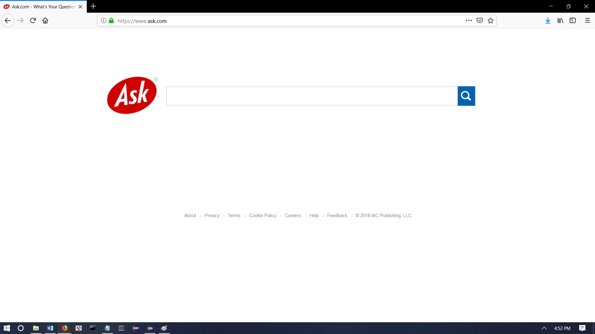
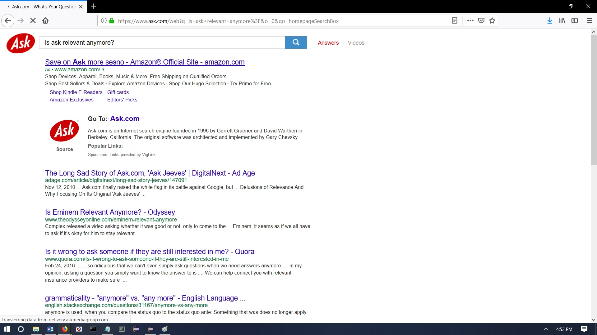

Here’s what Ask looks like.
Compared to the others, the homepage has the logo on the side.
Here’s what happens after you search for something.
Ok, let’s be honest...I don’t think anyone has used this search engine since the late 2000s. I guarantee that if you ask any kid under the age of 10 to name a search engine you will never get Ask as an answer. The only time you should ever find yourself on this site is:
- Congrats. You somehow managed to get your computer infected by a virus in 2018, and it has changed your default search engine to this dinosaur. I would recommend going back to the home page and figuring out how to change your default search engine back to what you want. Also, no we do not have any advice on how to get rid of the virus. That is on you to fix.
- Looks like it is one of those rare cases, in which, every search engine website is down except for Ask. Maybe, the one person who is still managing the website found enough spare change in their pockets to DDoS all of their competition. Who knows how they did it? All I know is that everyone is going to suffer as a result. May God have mercy on us.
- Your forgot how to spell the Google url, and luckily, Ask is a lot easier to spell. I guess they did something right.
- You are purposely looking to get the worst type of results for whatever you want to search for.
In summary, please do yourself a favor and look at the other options we have presented for you. No one at this point in time should be using this best left forgotten search engine, but we’ll give you the link anyway if you REALLY want to use Ask.